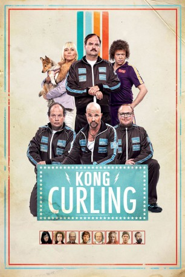

#8360 King Curling - Blanke Nerven, dünnes Eis
 
 IMDB-Wertung: 6.2 / 10
IMDB-Wertung: 6.2 / 10  Metascore: 0
Metascore: 0 
Ein unter Zwangsneurosen leidender Curling-Spitzensportler soll der Gesundheit wegen seinem extrem nervenaufreibenden Lieblingssport fernbleiben. Um für die dringend notwendige Operation seines Chefs Geld aufzutreiben, soll der mehrfache Weltmeister gegen den Rat der Ärzte dennoch wieder in die Mannschaft. Skurrile Dramödie um eine visuell bemerkenswert aufbereitete Randsportart.
Jahr: 2011
Dauer: 73 Minuten
FSK:
Land: Norwegen Studio: Euforia FilmTonspuren:
Untertitel:
Auflösung: 720p (1280x720) Größe: 1341 MB
Genre: Komödie, Sport
Regisseur: Ole Endresen
Drehbuch: Atle Antonsen
Soundtrack: Stein Johan Grieg Halvorsen, Eyvind Andreas Skeie
Darsteller:
- Atle Antonsen als Truls Paulsen
 Kåre Conradi als Stefan Ravndal
Kåre Conradi als Stefan Ravndal Jon Øigarden als Marcus
Jon Øigarden als Marcus Ane Dahl Torp als Trine Kristine
Ane Dahl Torp als Trine Kristine- Ulf Brunnberg als Rod Arne
 Kiran Shah als Pepsimannen
Kiran Shah als Pepsimannen Trond Fausa als Ornitolog (uncredited)
Trond Fausa als Ornitolog (uncredited)- André Santagati als Curling supporter (uncredited)
- Linn Skåber als Sigrid Paulsen
 Ingar Helge Gimle als Gordon
Ingar Helge Gimle als Gordon- Jan Sælid als Espen
- Steinar Sagen als Flemming
- Else Kåss Furuseth als Toril
- Anne Marit Jacobsen als Psykiater
- Harald Eia als Arne
- Bård Tufte Johansen als Knut
- Egil Hegerberg als Dommer
- Hans Morten Hansen als Arild Brekke
- Nils Nordberg als Oppfinneren programleder
- Jon Axel Olsen als Prest
- Anders Svalestad als Team Ravndal
- Håkan Sandell als Team Ravndal
- Ole Sletner als Team Ravndal
- Sivert Skoghaug als Lille Truls
- Asbjørn Olsen als Truls' sjef
- Ågot Sendstad als Terapeut
- Magnus Devold als Bud (uncredited)
- Anders Lidin Hansen als Sykepleier (uncredited)
- Edvin Løfgren als Curling supporter (uncredited)
- Ruben Løfgren als Curling supporter (uncredited)
- Gotmar Rustad als Harald (uncredited)
Datei: X:\2011(G-M)\King Curling - Blanke Nerven, dünnes Eis (2011, FSK, 1280x720).mkv seit 28.02.2018
Festplatte: HD 2011(G-Z)
 Es gibt insgesamt 100 Filme in der Gruppe '2011(G-M)'
Es gibt insgesamt 100 Filme in der Gruppe '2011(G-M)'